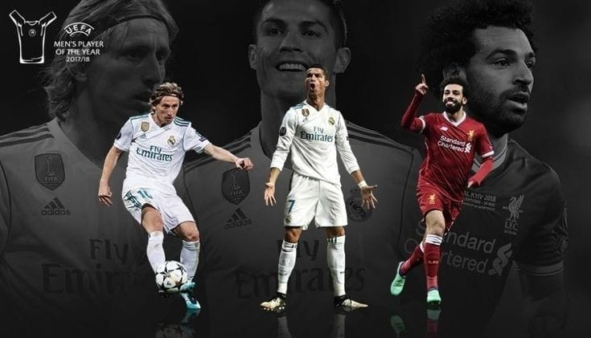
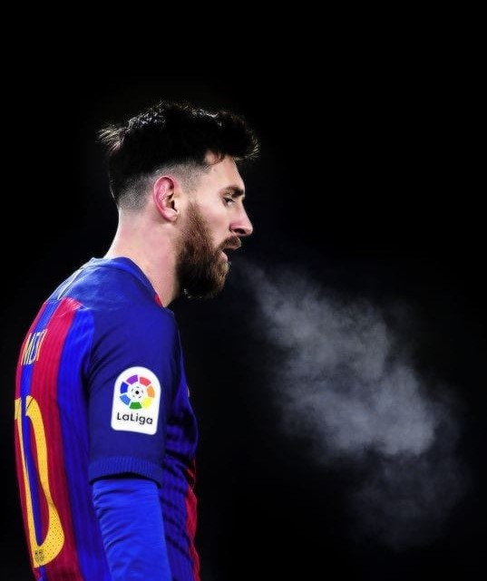
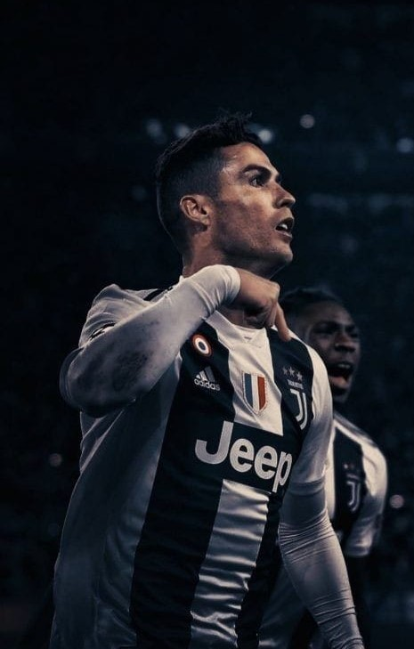
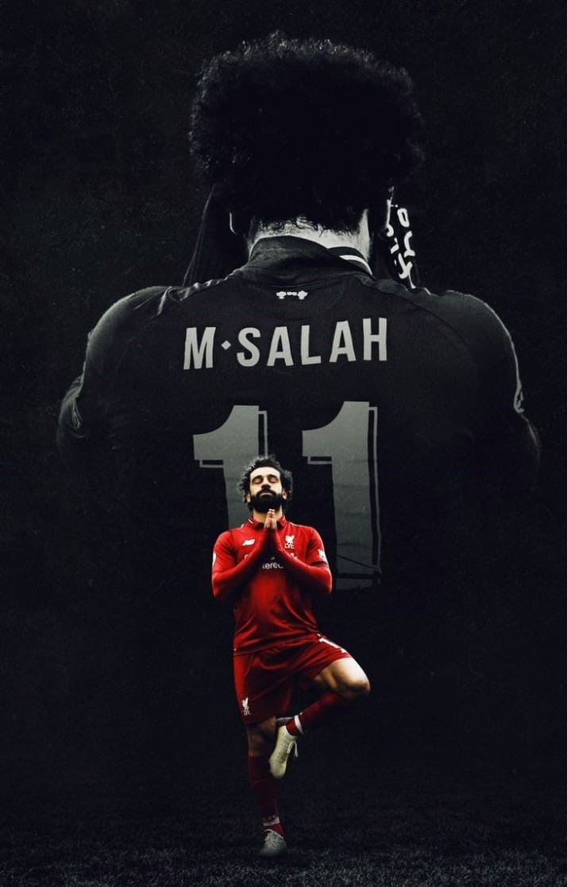

A CHAMPION is simply someone who didnot give up when they wanted to....

1-- Lionel Messi
Age: 32
Team: Barcelona
Position: Forward
Rank: 3 2018 ▲2
About him--
This entry is supposed to
be around 100 words long,
so the temptation is to
say:
“Lionel Messi is
the best player
by a very long way”.

2--Cristiano Ronaldo
Age: 34
Team: Juventus / Portugal
Position: Forward
Rank: 2 2018 ▼2
About him--
Snubbed by
the Ballon d’Or voters,
and down to his
lowest position
in our rankings since
they launched
in 2012,
you could be forgiven for
thinking that this was
a disastrous year
for Ronaldo.

3-- Mohamed Salah
Age: 27
Team: Liverpool / Egypt
Position: Forward
Rank: 5 2018
About him--
It has been a curious
12 months
for Salah in that
he has achieved a lot yet
there remains a sense
he has also come
up short.
That is because of the high
standards he set for
himself a
couple of years ago,